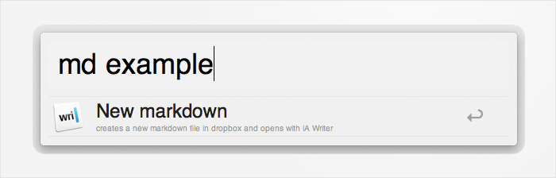
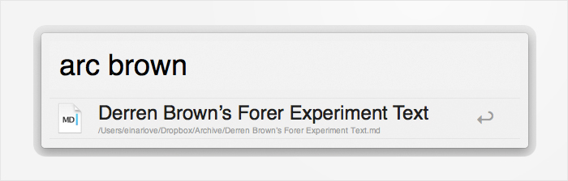

Throughout the week I need to write down quotes, ideas, todos, email drafts and much more, and since I do this so frequently I want a quick and seamless solution.
One great application to take and search notes is Notational Velocity, but I want to write in markdown in my preferred editor, quicker access, backup solution and sync to my PC and Android phone.
After I installed the powerpack addon for Alfred I discovered a solution that would automate all the work for me, and I would like to share my hack with you.
Demonstration
If I get the urge to write down something, I press ⌘+space to display Alfred, write md and a preferred name for the note.

With a quick keystroke I am able to open up my preferred editor which I can quit soon thereafter without the need to save
When i hit Enter, Alfred creates a new markdown document in ~/dropbox/Archive with the filename I specified, and then opens that document in iA Writer. While I write, the document synchronizes to my other devices for easy access.
In addition to being able to use Notational Velocity's blazing fast search, I wanted a quicker way which didn't require the hassle of opening the application. So I made it possible to search for a note in a simple way using Alfred.

I can also use Alfred to search for the title of notes and quicky resume
I hit Enter and the note opens in iA Writer.
Walkthrough
Everything I do in this walkthrough except Alfred is optional, and can be replaced by names, applications and extensions to your liking.
To follow the walkthrough firmly, you'll need iA Writer, Notational Velocity, Dropbox and Alfred with Powerpack.
- Start by creating a folder in Dropbox named Archive.
- Open Notational Velocity's Preferences and select iA Writer in the External Editor dropdown.
- Click on the "Notes" tab and select your newly created folder in the dropdown in the "Read notes from folder" option
- Close Notational Velocity and open Terminal. Write:
cd ~/dropbox/Archive
chflags hidden Notes\ \&\ Settings
chflags hidden Interim\ \Note-Changes
To hide Notational Velocity's settings files from finder.
- Download these two scripts. Open up Alfred(with powerpack installed) and navigate to the Extensions tab in the preferences. Find the newly downloaded files and drop them in the "Drop to install" square in the bottom right corner.
It's now ready, so open up Alfred with ⌘+space and type md as a keyword and write a name for your note and hit enter.
iA Writer should now open up, so write something clever. Close and open Alfred. To search for a note you write arc plus something from the filename.
After a couple of weeks you will forget the name of the file, and then its as easy as opening up Notational Velocity and use its comprehensive search. This method is very customizable, so you can use other editors, different file extension, another cloud service and your own names and keywords.
With Alfred's extesions you can simplify tasks like searching for synonyms, rake tasks, updating status and tweet, clean desktop and much more. So create your own scripts and share them.